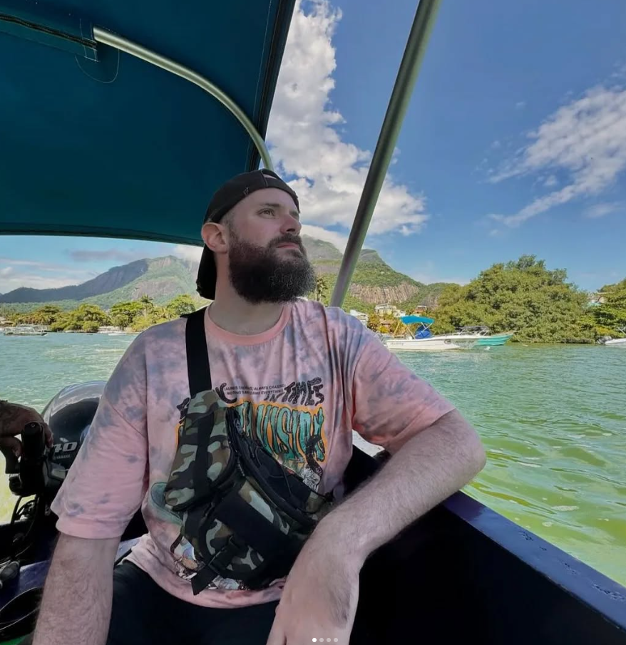
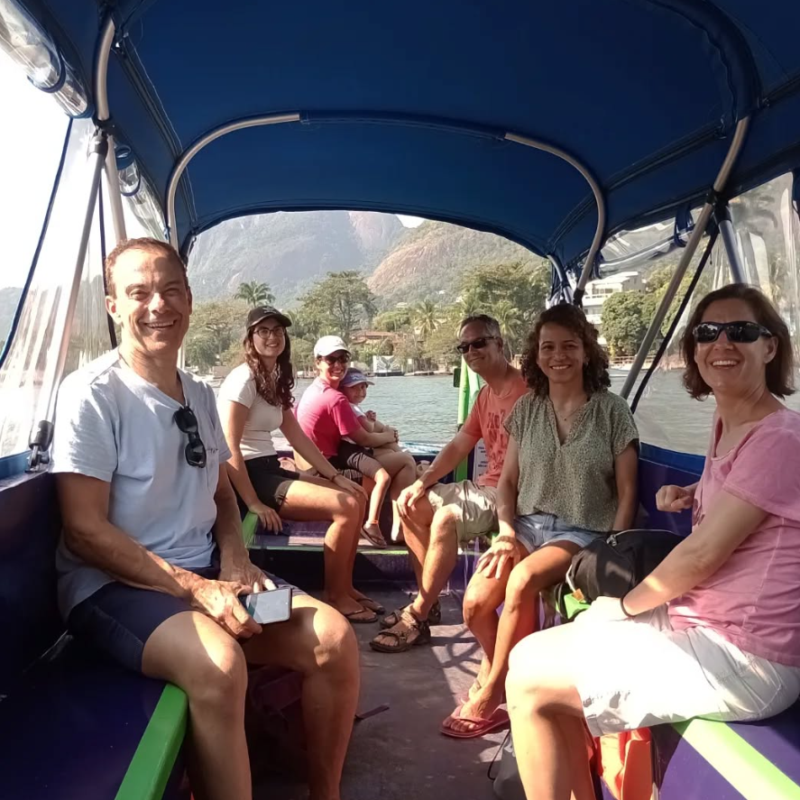
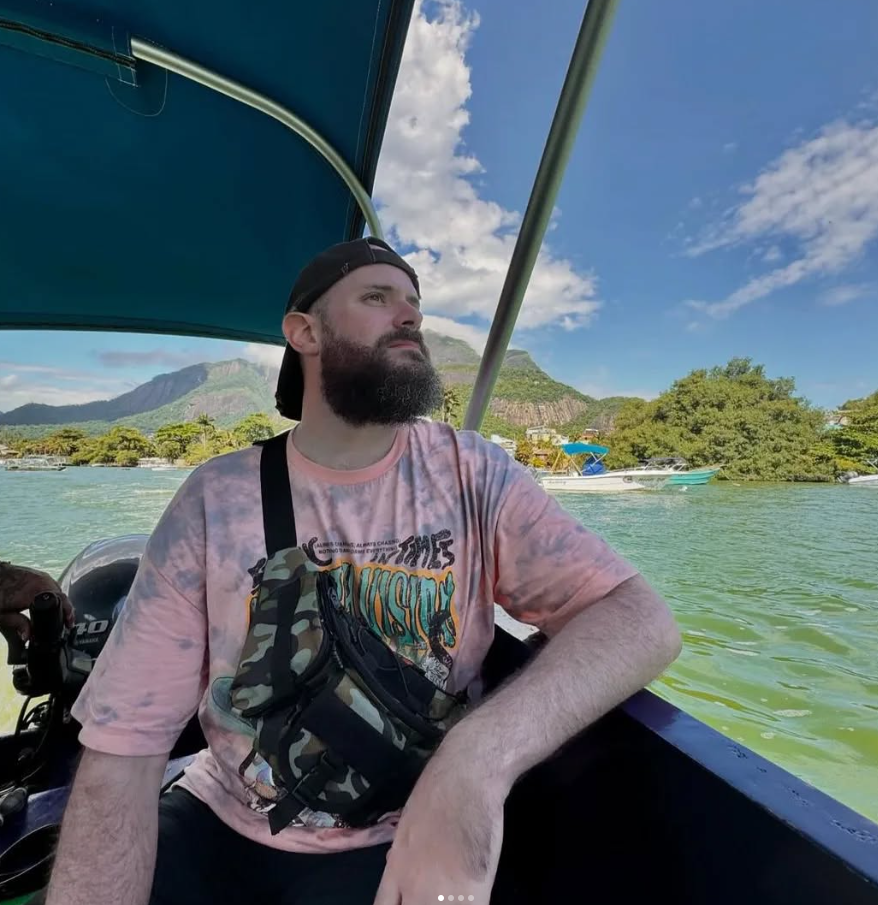
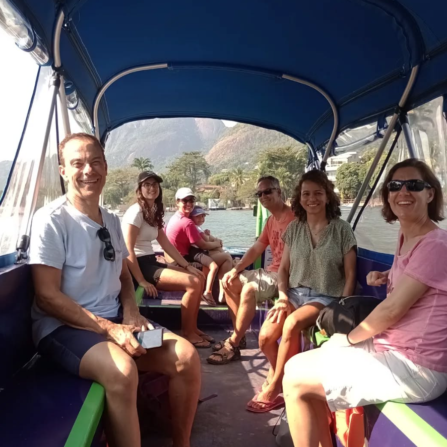

¡Nuestro paseo es diferente! Nada de prisas, nada de estrés. Aquí, embarcas en un viaje por las tranquilas aguas del archipiélago, rodeado por la exuberante naturaleza de nuestro Pantanal Carioca.

Pantanal Carioca

Paseo Prime
Islas Tijucas
¿Quieres ver un caimán de hocico amarillo de cerca? ¿Disfrutar de una playita escondida? ¿O sumergirte en el agua con stand-up paddle y buceo? Entonces ven con nosotros. Nuestros paseos son para quienes quieren conectarse con la naturaleza, explorar rincones paradisíacos y, por supuesto, disfrutar de ese ambiente especial que solo Río tiene.
 



¡Ahora solo tienes que elegir el paseo que más te guste y partir hacia el mar!


Obtén respuestas a tus preguntas rápida y fácilmente
Cada tour tiene un itinerario diferente. ¡Embárcate en estas emocionantes atracciones!
Los niños hasta cinco años no pagan, limitado a tres por grupo, siempre que estén acompañados por al menos dos adultos.
¡Sí! Se toman todas las medidas de seguridad marítima para garantizar una experiencia tranquila y segura.
Sí, hay una opción de tour bilingüe, pero debe solicitarse con anticipación y el precio puede variar.
Sí, si el guía está acompañado por al menos dos personas, el tour es gratuito.
¡Por supuesto! Podemos ofrecer diferentes tipos de promociones especiales.
Pix / Efectivo / Crédito / Débito